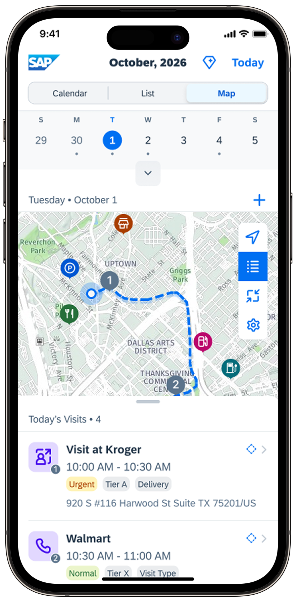
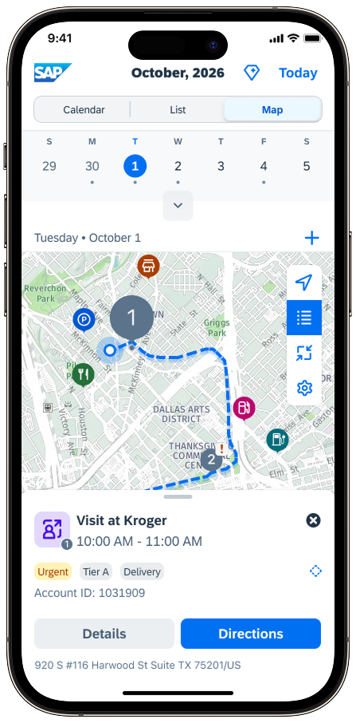
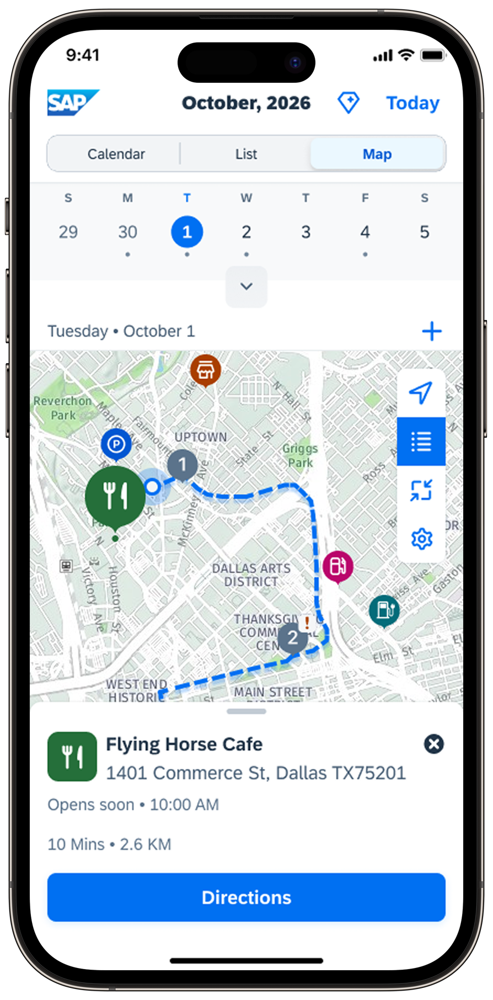
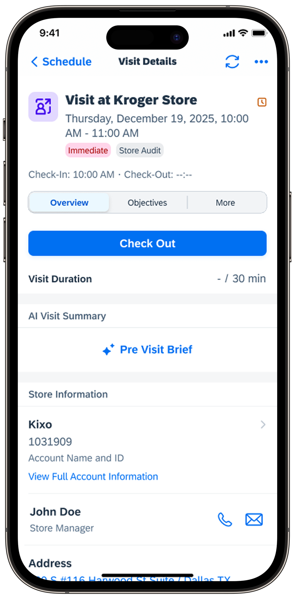
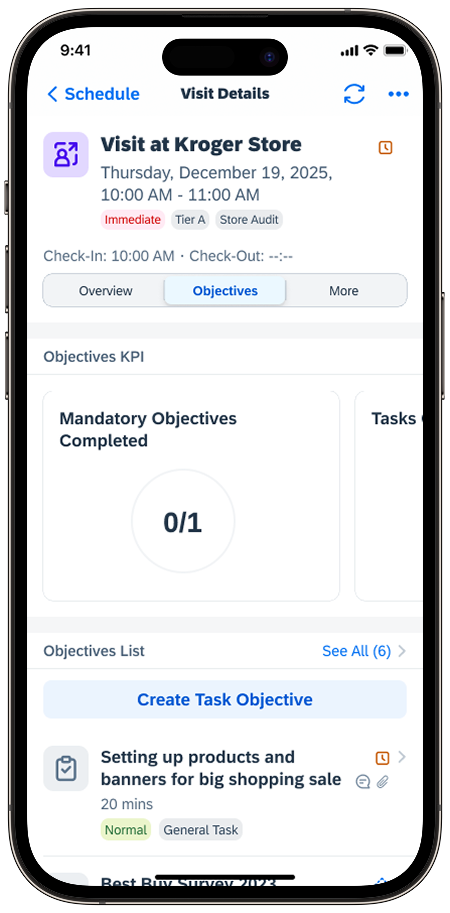
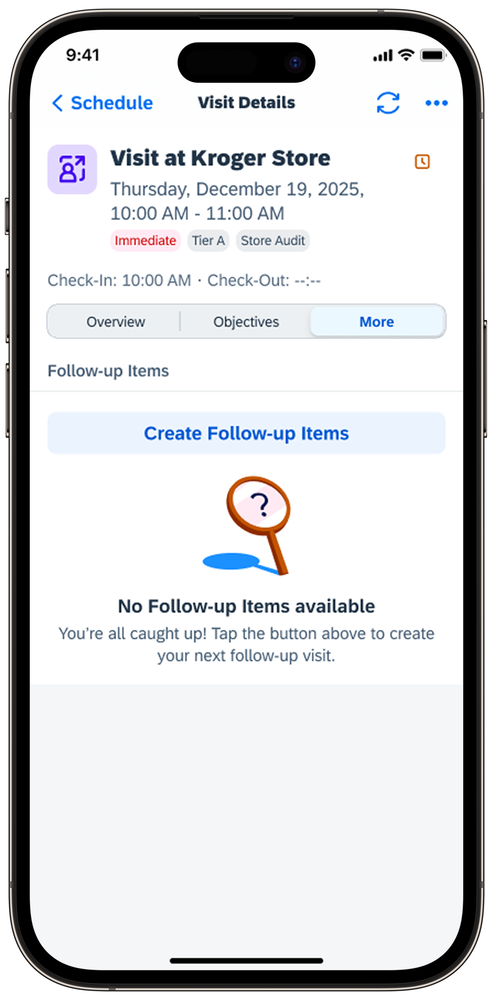

Case Study 01 — SAP Retail Execution
Map View and Visit Execution — two features that defined SAP Retail Execution Mobile App, validated across five research studies and two years of field testing.
Field sales representatives were carrying five to seven apps to do one job — Google Maps for routing, Outlook for scheduling, Salesforce for notes. Each tool isolated, each adding cognitive overhead to a role already defined by time pressure.
SAP had an existing Retail Execution product — desktop-first, built for compliance over speed, requiring stable connectivity in an environment where signal loss is a daily reality. The opportunity: design a mobile-first iOS app that brought intelligent route planning and contextual visit execution together in one tool reps would actually reach for.
End-to-end UX across Beta, V1, and V1 extensions — research planning, moderated studies, high-fidelity prototyping, and usability testing with 14+ field sales representatives across the US, Europe, and LATAM over three years.
"It would be fantastic to keep everything in one spot next to the account it applies to."— Field Sales Representative, Usability Study 3
SAP's existing Retail Execution product was built for administrative desktop workflows — not for someone standing in a store aisle. Competitors — Salesforce, SpringGlobal, Encompass — had mobile presence, but none had solved route visualisation or visit-level contextual intelligence. The window to lead on mobile was open.
Reps manage 12 to 300 accounts with visit frequencies from daily to monthly — self-planning in an environment defined by time pressure and dead zones. What we found:
Route planning in Google Maps, disconnected from the visit schedule entirely.
Account history reconstructed from memory, emails, and separate spreadsheets.
Visit notes written at home in the evening, after in-store details had faded.
Rural areas, cooling rooms, and large retail floors kill cellular signal regularly.
Completed activities didn't connect to monthly targets until someone ran a report.
A rep covering a beverage territory might run 8–12 accounts in a single day: routine checks, audits, delivery follow-ups — each with its own tier, required tasks, and store manager relationship. Cooling rooms, large retail floors, and rural transit regularly kill signal. The app had to work when the network didn't. Two mental models shaped every decision that followed:
When asked how they plan their day, participants described their territory spatially — not as a list of appointments. The map didn't teach them a new model. It reflected the one they already had.
What a rep needs before entering a store is fundamentally different from what they need inside it. Pre-visit: orientation, context, history. In-visit: task execution, mandatory completion, compliance. Different cognitive modes — not phases of the same workflow.
5 participants across US, UK, LATAM, EU. The breakout moment: participants described being "fascinated" by the map. Research summary: "None of the competitor solutions offered the same process mapping capabilities." Two participants independently requested Points of Interest without prompting.
4 participants across US and EU. A/B test between single scroll and segmented scroll produced the only unanimous result across four studies. AI assistance surfaced independently — before it appeared anywhere on the roadmap.
Screen-by-screen evaluation with enterprise users. Dashboard and Map rated 5/5. Three actionable gaps: sync state visibility, contextual account data during visits, and order creation for CPG customers.
7 participants via UserTesting.com across US, UK, Germany, France, Canada. 71.4% average task success. "Clean, fresh, well-organized." Lowest success: the extensibility section — identified as the primary iteration target.
The map feature is perceived extremely positive — some are fascinated.
— Research summary, Study 1I like it very much. It is clear, it is slim. There is all that I need.
— Key Account Manager, EUIt looks very polished and a nice app to use. Familiar with it like Outlook.
— Field Sales Rep, UKFive insights from the research program — each with a direct design implication for Map View, Visit Execution, or both.
Participants described their day spatially, not as a schedule. The map produced immediate recognition — it reflected the mental model they already had, not a new one to learn.
What a rep needs while driving to a store differs from what they need walking inside it. Mixing orientation content with execution tasks creates confusion at exactly the wrong moment — arriving at a store.
Participants said they wanted more features. What they demonstrated was frustration with tools that showed too much. Observed behavior overrides stated preference, every time.
All Study 2 participants expected offline capability without being asked — rated 8.2/10 average importance. For reps in cooling rooms, rural territories, and large retail spaces, signal loss isn't a failure state. It's Tuesday afternoon.
Every participant compared the app to Outlook or Apple Calendar — not SAP Sales Cloud. The adoption bar isn't "better than the existing enterprise tool." It's "as good as the apps I use every day."
Study 2 made the case unambiguously — participants weren't just interested, they were "fascinated." Research confirmed no competitor offered route visualisation at this level. The design question shifted from whether to build this to how to make that reaction hold up in production.



The map is one of three equal-weight views in the Schedule tab — alongside Calendar and List. Study 1 showed reps split naturally between time-based and task-based preferences. Map serves the third mental model: geographic thinkers.
A map full of store pins tells you where accounts are. It doesn't tell you in what order to visit them — which is how reps actually plan their day.
Numbered sequential markers tied to visit order.
Color communicates attribute; a number communicates sequence. Study 2 participants understood the numbered markers immediately, without instruction — zero-friction recognition.
When a rep taps a store pin, what happens? Full-screen navigation breaks spatial awareness. An inline tooltip has no room for useful detail.
Persistent bottom sheet with swipe-to-dismiss.
The bottom sheet keeps map context visible while reviewing an account. In Study 2, 3/5 participants expected to dismiss overlays by tapping anywhere — swipe-to-dismiss aligned with that naturally.
Route planning isn't just about store visits — it's about the whole workday. Where can I eat? Where do I park? Where's the nearest fuel stop before a rural run?
Always-visible contextual POI layer.
Two participants in Study 2 independently requested POIs from different geographies — without prompting. Independent convergence on the same unprompted request is a strong signal.
While exploring the map, reps spotted nearby accounts not on their schedule and wanted to add ad-hoc visits. The entry point wasn't surfaced contextually.
Inline "Add Visit" action on the store card bottom sheet.
In Study 2, 2/5 participants tried to add visits from the map and couldn't find where to do it. The intent forms spatially — the action needed to be available at that moment.
The challenge wasn't displaying all the information — it was displaying the right information at the right moment. A rep arriving at a store needs to know immediately which tab to open. Hesitation in field execution costs time.
Two structural models were tested in Study 3 — the result was unanimous.
All content on one continuous page — overview information followed by execution tasks in a single scroll surface.
Not a failure. But mixing orientation content with execution tasks created confusion at the critical moment: arriving at a store, where the rep needed to know immediately which section to act on.
A segmented control separating Overview (check-in, AI brief, store info) from Objectives (KPI progress, task list, mandatory items).
Rated 5/5 by every participant. The segmented structure matched the two distinct cognitive modes of a store visit — preparation and execution. A rep who knows which tab to open doesn't hesitate.



Where do you put the control that switches between overview and execution? And what do you call the modes? Placement determines how quickly a rep can orient on arrival.
Top segmented control, directly below the persistent visit header.
Tabs suggest separate destinations; a segmented control signals "same place, different view" — which is exactly the mental model. Labels "Overview / Objectives" — functional and direct, consistently outperforming descriptive alternatives for enterprise users under time pressure.
Check-in starts official visit time — it matters for KPI tracking and compliance. As screen content density increased across iterations, the CTA risked losing prominence.
Full-width prominent CTA maintained as primary visual anchor regardless of surrounding content density.
All Study 2 participants completed check-in without hesitation. Every content addition was evaluated against the CTA's visual prominence — the button was never demoted.
Reps needed an at-a-glance count of remaining mandatory tasks and a fast path to navigate to them — the mandatory counter sat visually prominent but functioned as static text.
Tappable counter with direct navigation to mandatory objectives.
In Study 3, 2/4 participants tapped the counter expecting navigation. An affordance that looks interactive but isn't is a broken expectation — making it tappable resolved the failure and added a meaningful shortcut for compliance-focused reps.
Visit notes were written at home after the day — inaccurate, missing follow-ups, poor continuity across visits to the same account.
Free text notes with attribution — who wrote it, when — plus AI post-visit summary generated automatically.
Notes received the most unsolicited positive feedback of any feature across all research rounds. Attribution created a "visit diary" mental model participants immediately understood.
SAP Retail Execution Mobile App was built on SAP's Mobile Development Kit (MDK) — a cross-platform enterprise framework enabling faster backend integration, but limiting some native iOS patterns. The discipline: be explicit about which native interactions to prioritize within the constraint rather than accepting compromise uniformly. The bottom sheet and segmented control both required specific investment to feel native. That investment was made.
Every stakeholder review surfaced additions: more KPI types, expanded account data, more map filters. The design discipline was a single question, asked of every proposed change: does this help a rep complete a visit faster, or does it help a stakeholder feel the product is comprehensive? Those are different questions. That distinction, held consistently, produced "I like it very much, it is clear, it is slim, there is all that I need."
Offline-first wasn't just a backend requirement — it was an architectural lens. If a data field only existed online, it couldn't anchor a critical visit flow. The constraint eliminated speculative features, tightened information hierarchy, and made every connected interaction more intentional. Designing around a constraint rarely produces this result. Designing with it did.
The only unanimous result across five studies. Every participant chose segmented scroll — a rare level of agreement in usability research.
"Very polished", "neat and tidy", "easy to navigate." Consumer-grade language applied to enterprise software.
"All participants indicated they would love to use an app like this for their work." — Study 2 summary, January 2024.
Enterprise users at a customer site validated multiple iterations of information hierarchy and route visualisation decisions.
4/5 participants rated offline visit creation "very valuable" — a foundational capability competitors had not solved.
"None of the competitor solutions offered the same process mapping capabilities." — Study 2. The map was the clearest point of differentiation over Salesforce, SpringGlobal, and Encompass.
These outcomes reflect usability research findings and beta evaluations rather than production telemetry. Live adoption metrics will follow enterprise rollout completion.
Five studies across three years gave this project something most portfolios don't: evidence that early decisions held up with real users, repeatedly. The map's "fascination" response in Study 2 replicated across geographies and enterprise contexts. That kind of validation only comes from research that spans the full product lifecycle.
The segmented vs. single scroll debate ran for three weeks. Four participants, twelve minutes each — and the debate was resolved permanently. Framing the right question and testing at the moment the decision actually matters is the fastest path to alignment that sticks.
The offline-first requirement forced clarity about information hierarchy that improved the connected experience. The MDK constraint forced specificity about which native patterns to prioritise. Constraints treated as design inputs — not just engineering problems — consistently produced better outcomes than unconstrained design compromised at implementation.
Every stakeholder wants to add something. Simplicity doesn't happen by default. The quote that represented this project's discipline wasn't a metric — it was a rep in an EU session saying "I like it very much, it is clear, it is slim, there is all that I need." That represents three years of restraint, not limitation.
Every participant compared the app to Outlook or Apple Calendar — not SAP Sales Cloud. The adoption bar isn't "better than the previous enterprise tool." It's "as good as the apps I use for everything else, every day." Designing to that standard in enterprise isn't optional anymore — it's the minimum cost of adoption.
Next Case Study
Case Study 02 — SAP Customer Experience · Service Cloud
AI-powered recommendations for service managers — addressing escalation risk, sentiment decline, and workforce gaps before they become crises. Validated by 5 managers and 12 enterprise customers.
View Case Study ↗